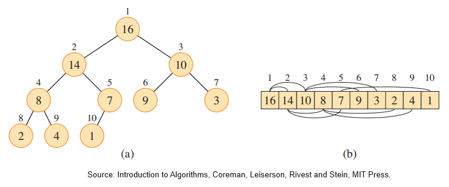
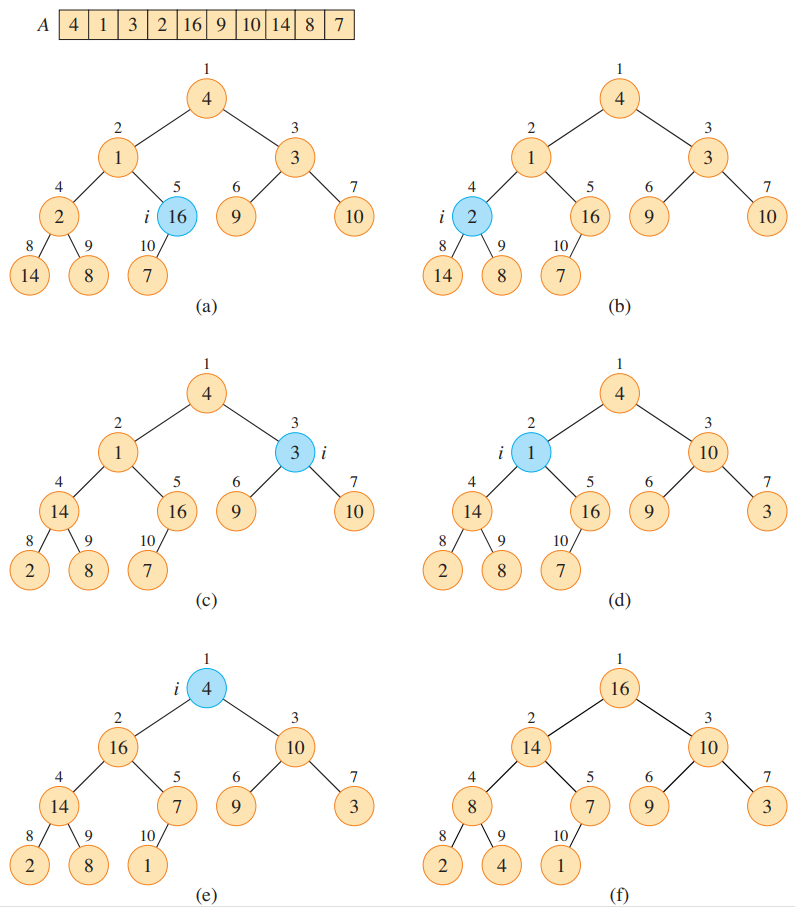

STL Algorithms
Heaps.
A real-life heap of pebbles consists smaller stones on the top, while the bigger one is at the bottom.
Heaps in C++ are the opposite of rock-towers, the biggest element is at the top, and every element is bigger than it’s children. The C++ heap is a max-heap.

The (binary) heap data structure is an array object that we can view nearly as a complete binary tree. Each node of the tree corresponds to an element of the array. The tree is completely filled on all levels except possibly the lowest, which is filled from the left upto a point. An array A[0...n-1] is an object with an attribute A.heap-size which represents how many elements are stored in the array A. That is, although A[0...n-1] may contain numbers, only the elements in A[0...A.heap-size-1] where $0\leq A.heap-size \leq n-1$ are valid elements of the heap. If A.heap-size == 0, then the heap is empty. The root of the tree is A[0], and given the index i, there’s a simple way to compute the indices of the parent, the left child, the right child.
#include<iostream>
#include<vector>
using namespace std;
template <typename T>
class Heap
{
public:
int size() const
{
return A.size();
}
int parent(int i)
{
return (i - 1) / 2;
}
int left(int i)
{
return 2 * i + 1;
}
int right(int i)
{
return 2 * i + 2;
}
T& operator[](int i)
{
return A[i];
}
const T& operator[](int i) const
{
return A[i];
}
Heap(std::vector<T> elements) : A{ elements } {}
Heap(std::initializer_list<T> list) : A {list} {}
void maxHeapify(int i);
void buildMaxHeap();
private:
std::vector<T> A{};
};
There are two kinds of binary heaps: max-heaps and min-heaps. The biggest element in a max-heap is at the root. A max-heap satisfies the max-heap property:
A.parent(i) >= A[i]
Viewing the heap as a tree, we define the height of a node in a heap to be the number of edges of the longest simple downward path from the node to the leaf, and we define the height of the heap to be the height of the root.
Maintaining the heap property.
The procedure maxHeapify maintains the max-heap property. When it is called, maxHeapify() assumes that the binary trees rooted at left(i) and right(i) are max-heaps, but A[i] might be smaller than its children thus violating the max-heap property. maxHeapify() lets the value at A[i] float down in the max-heap, so that the subtree rooted at index $i$ obeys the max-heap property.
The figure below illustrates the action of maxHeapify(). Each step determines the largest of the elements A[i], A.left(i) and A.right(i) and stores the index of the largest element in largest. If A[i] is largest, then the subtree rooted at $i$ is already a max-heap and nothing else needs to be done. Otherwise, one of the two children contains the largest element. Positions i and largest swap their contents, which causes node $i$ and its children to satisfy the max-heap property. The node indexed by largest, just had its value decreased, and thus the subtree rooted at largest might violate the max-heap property. Consequently, maxHeapify() is called recursively on that subtree.
template <typename T>
void Heap<T>::maxHeapify(int i)
{
int l{ left(i) };
int r{ right(i) };
int largest{};
if ((l < A.size()) && (A[l] > A[i]))
largest = l;
else
largest = i;
if ((r < A.size()) && (A[r] > A[largest]))
largest = r;
if (largest != i)
{
std::swap(A[i], A[largest]);
maxHeapify(largest);
}
}
Building a heap.
The function buildMaxHeap converts an array A[0...n-1] into a max-heap by calling maxHeapify() in a bottom up manner. Note that, the elements in the sub-array A[(n-1)/2+1...n-1] are all leaf nodes, so each is a $1$-element heap to begin with. buildMaxHeap() goes through the remaining nodes of the tree and runs maxHeapify() on each one.
template <typename T>
void Heap<T>::buildMaxHeap()
{
int n = static_cast<int>(size());
for (int i{ (n + 1) / 2 }; i >= 0; --i)
{
maxHeapify(i);
}
}

We can also write a method overloading the operator<<.
template <typename T>
std::ostream& operator<<(std::ostream& os, const Heap<T>& heap)
{
os << "Heap : " << "\n";
for (int i{}; i < heap.size(); ++i)
{
os << heap[i] << " ";
}
os << "\n";
return os;
}
Try the buildMaxHeap code snippet here.
make_heap property.
If we have a range in C++, we have a begin() and an end() and we can use STL algorithms. The first thing we can do is, taking values that are not particularly a heap, and call the make_heap property in the standard library to rearrange them, so that they respect the max-heap property.
std::vector<int> numbers {4, 1, 3, 2, 16, 9, 10, 14, 8, 7};
std::make_heap(begin(numbers),end(numbers));
Adding an element into a heap.
To insert an element into a heap, we add the element to the end of the heap. This may violate the max-heap property, so we compare the newly inserted element with its parent, and bubble the element up the heap until the max-heap property is satisfied.
template <typename T>
void Heap<T>::pushHeap(T x)
{
A.push_back(x);
int i = static_cast<int>(A.size()) - 1;
while (i >= 0 && A[parent(i)] < A[i])
{
std::swap(A[i], A[parent(i)]);
i = parent(i);
}
}
push_heap property.
The push_heap algorithm in the standard library inserts the element at the position last-1 into the heap [first,last - 1). The heap after insertion will be [first,last).
#include <algorithm>
#include <iostream>
#include <string_view>
#include <vector>
void println(std::string_view rem, std::vector<int> const& v)
{
std::cout << rem;
for (int e : v)
std::cout << e << ' ';
std::cout << '\n';
}
vector<int> v {4, 1, 3, 2, 16, 9, 10, 14, 8, 7};
println("original vector: ", v);
std::make_heap(v.begin(),v.end());
println("after make_heap: ", v);
v.push_back(15);
println("after push_back: ", v);
std::push_heap(v.begin(),v.end());
println("after push_heap: ", v);
original vector: 4 1 3 2 16 9 10 14 8 7
after make_heap: 16 14 10 8 7 9 3 2 4 1
after push_back: 16 14 10 8 7 9 3 2 4 1 15
after push_heap: 16 15 10 8 14 9 3 2 4 1 7
Removing an element from a heap.